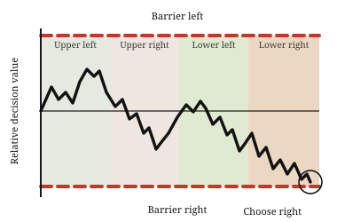
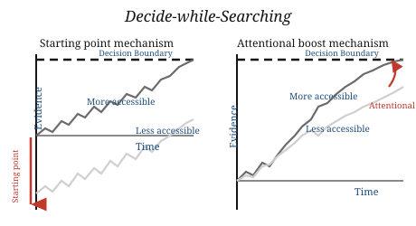
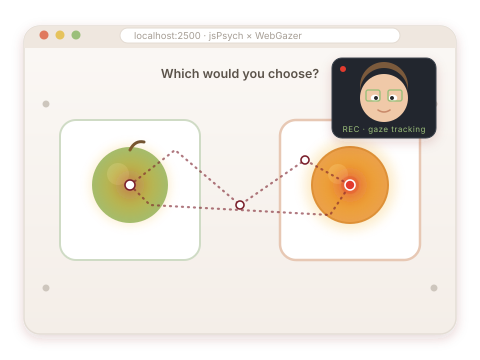

About
I am a MindCORE Fellow and PennAI Fellow at the University of Pennsylvania, working with Sudeep Bhatia, Joe Kable, and Anna Schapiro. Before joining Penn, I completed my Ph.D. in Psychology at The Ohio State University with Ian Krajbich and spent time as a visiting researcher at UCLA. During my Ph.D., I interned at Meta FAIR Analytics and Snap Research.
I study how the mind learns, decides, and generalizes over time. My research examines the cognitive processes that unfold during learning and decision making, with a particular focus on how visual attention and memory guide these processes. At the core of my work are dynamic computational models of decision making, which I build and test with process-tracing tools such as eye-tracking and mouse-tracking, alongside methods from natural language processing and large language models.
Representative Work
Attention and multi-attribute choice
One line of my research focuses on how external information search shapes multi-attribute choice. I develop dynamic models of decision making that explain how gaze toward options and attributes is integrated into the choice process. More recently, I have examined how visual attention influences attribute consideration, and how people allocate attention more strategically as choice environments become more complex.

A dynamic model of how gaze toward both options and attributes shapes choice, and how attribute-level gaze reflects the weight people assign to different attributes.
Option generation and decision from memory
How do individuals make open-ended decisions when the options are not given, but must be generated from memory? This question is increasingly important in the age of AI, where everyday interactions with language models often begin with self-generated queries, prompts, and goals.

When people must generate their own options, they evaluate them as they come to mind and favor those recalled earlier — a bias amplified under time pressure. In this paper, we also develop a dynamic model in which value and accessibility jointly drive choice and response time, capturing when accessibility helps and when it hurts.
Accessible tools
While process-tracing techniques like eye-tracking offer invaluable insight into how decisions unfold over time, a major barrier for many researchers is the effort required to collect data in the lab. To lower that barrier, I have worked to make online eye-tracking more broadly accessible — and recently applied it to defending against AI agents.

A validated, low-cost method for collecting gaze data over the web—integrating the WebGazer library into jsPsych experiments.